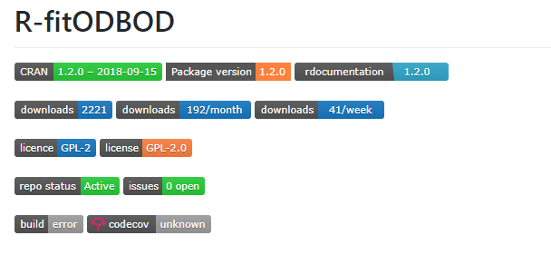
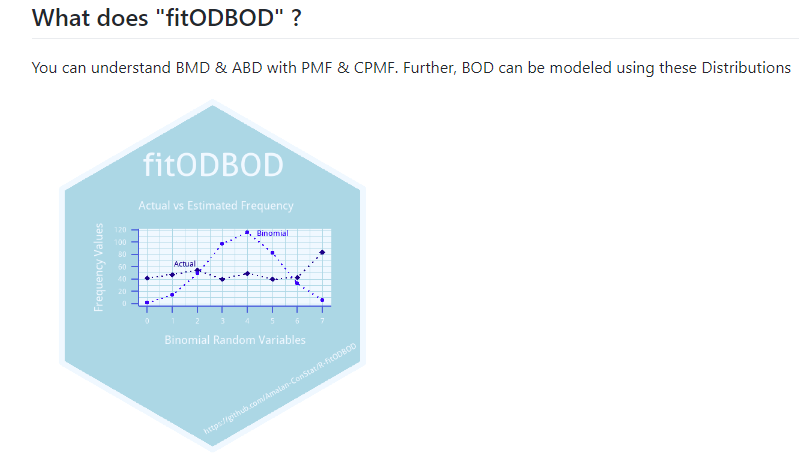

Build a New Package with Existing R packages
Introduction
Package development is a sense of accomplishment for any statistical programmer who needs self satisfaction. I developed the R package fitODBOD for the purpose of fitting Over dispersed Binomial Outcome Data using Binomial Mixture Distributions and Alternate Binomial Distributions. It was a an amazing journey learning how to develop an R package, which took me around 6 months while understanding the theoretical aspects of my research project and doing my 4th year courses.
I am still learning new things related to R, which is helpful for this R package development. Making package version updates regularly is for the benefit of the user. I have learned new ways to express the theoretical concepts in the simplest form of functions, classes and methods. Currently, I am exploring the possibility of using Rshiny dashboard and GUI.
In the beginning, R package developers have used manual techniques (which mean difficult techniques)
to develop R functions, documentation and examples for their packages. Over time it has changed rapidly, where currently we are using R packages to develop our own R package. In this post I shall briefly mention these packages which you can use. Using these packages it is possible to make package development stress free, time efficient and objective effective. Simultaneously we can make our R packages more attractive for the users, which would lead to lot of attention in the R community.
There are three types of packages in my perspective, first “Most Essential Packages” which cannot be ignored, second “Essential packages” it is your choice to ignore and finally, “Still I have not Used” packages.
Most Essential Packages
There are three packages in my main interest list and they are devtools, roxygen2 and testhat.
devtools
Collection of packages which would significantly help the package development process. Functions such as dev_mode, check_failures, check_win and check_man.
pkgbuild
Locates compilers needed to build R packages on various platforms.
pkgload
Simulate the process of installing a package and then attacking it.
rcmdcheck
Run “R CMD check” from R programmaticallly, and capture the results of the individual checks.
usethis
Automating few tasks related to package building.
roxygen2
Generate Rd documentation, and Namespace file with simplicity which would save time, when package update occurs.
knitr
Useful to develop vignettes related to R package development.
markdown, rmarkdown, rmdformats
Html formats to vignettes in R package development and special template styles for the vignettes.
spelling
Checking for spelling issues in Rd documentation files.
trackmd
Tracking changes in markdown files for vignette.
testthat
Checking if functions work properly by testing them in multiple ways for errors, outputs and inputs.
Essential Packages
We would not necessarily need these packages to develop our package, but it would make things more official if we choose to use them. Creating official badges, using GitHub for version control, checking for code coverage, distinct logo and having a website to explore the functions and vignettes of the package.
git2r and gh
Access to GitHub so that version control would occur smoothly with integration in Rstudio.
desc
Editing the Description file using package rather than manually editing the file.
covr
Checking code coverage, which means does all functions have examples and are there tests for error messages, etc.
badgecreatr and badger
Adding badges to GitHub repository, for example Download, CRAN status, code coverage, Release date, version and much more.
hexSticker
Creating a hexagon sticker for your package. Mostly just for the fun, but in a while its like promoting a brand.
pkgdown
Using man files, vignette of your package to develop a static website. Further, it is possible to promote this site to get more people interested in the package.
Still I have not Used
In this list I will explore packages which can be used to make package development more simple and elegant. Mostly using functions for the tasks of proper code spaces, indent and necessary R versions of dependency packages.
packrat
Manage the R packages in an isolated, portable and reproducible way.
pkgconfig
Set configuration options on a per-package basis.
pkginspector
Understand internal structure of an R package.
rvcheck
Check latest release version of R and R packages.
rversions
Focusing on R version ‘r-release’ and ‘r-oldrel’. Further all previous R versions.
formatR
Spaces and Indent for the code automatically added
whoami
Username and full-name of current user, also email address and GitHub username.
Conclusion
Hopefully we would have more packages and awareness towards R package development with more simplicity in the coming years. Even though we have more than 15,000 packages in CRAN it would still rapidly increase in the coming years, not only in CRAN but also in GitHub as well.
So far this post has only word content and links, therefore I am adding a screenshot of my fitODBOD package GitHub ReadME.md file. This screen shot includes badges for downloads, R version, published date, package version and a hexagon logo sticker.


I hope this blog post is useful for anyone who has intentions to develop their R package or in the process of development or version controlling. I developed fitODBOD as a research project for my final year and it included a thesis report as well. Over time I wrote a Journal article as well and it is still under review. Also I have seen R package development as a PhD submission as well. Therefore it would be worthwhile developing an R package as a way to keep an active status regarding your field of interest in Statistics.
THANK YOU